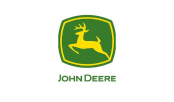
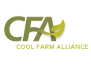

Partners in integration
The continuing satisfaction of our clients is among our greatest points of pride. Companies who begin a relationship with CropTrak quickly develop a level of trust and security in the service and value we provide. Just as it is in the field, we reap what we sow through the level of support we provide each day.

